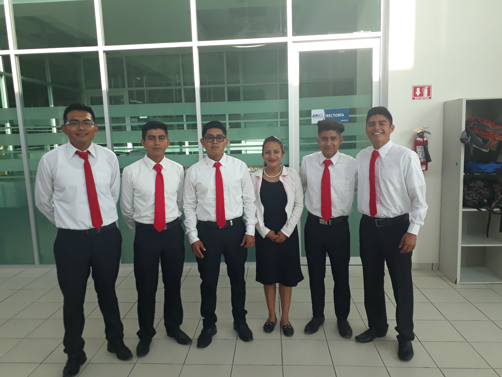

Nosotros Innovative Technical
Nosotros como una empresa que se dedica al mantenimiento de computadoras y red asi como la creacion de topokogias y diversos diseños para el uso laboral dentro de empresas o sitios de trabajo que los requiera
Brindar servicios de calidad a los equipos de cómputo, estructuración y mantenimiento de cableado de una manera correcta que debe tener un laboratorio de computo. De esta manera el servicio de Internet llegará sin ninguna dificultad a cada equipo para que los usuarios trabajen de manera eficiente, el cliente podrá darles adecuadamente las herramientas a sus usuarios
